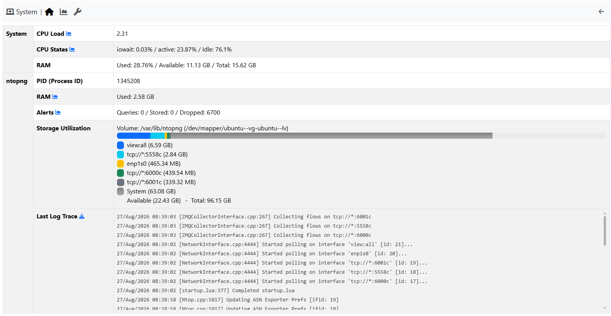

Система

Системный интерфейс
На странице есть вкладки Обзор, Исторические данные и Внутренности.
Обзор обновляется каждые 5 секунд и показывает:
Система: CPU нагрузка, CPU состояния (время ожидания диска, активный и простой) и использование памяти машины;
ntopng: идентификатор процесса (PID), память, используемая ntopng, оповещения (запросы, сохраненные и удаленные) и использование хранилища. Панель памяти показывает, сколько места на диске использует каждый интерфейс, сколько rest системы использует и сколько доступно; щелкните имя интерфейса, чтобы открыть его. Если записанный трафик (pcap файлы) находится на другом диске, вторая полоса показывает этот диск;
Последняя трассировка журнала: последние строки журнала ntopng с выделенными ошибками и предупреждениями, что полезно для отладки. Администраторы могут скачать журнал за последний день. Журнал не отображается в OEM-версиях.
Щелкните значок диаграммы рядом со значением, чтобы открыть его диаграмму в Исторические данные вкладка (см. Исторические графики). Значки диаграммы и Исторические данные вкладка отключена, когда системные таймсерии отключены в ntopngPreferences (Таймсерии->Системные зонды).
Внутренности Вкладка показывает состояние очередей ntopng, периодические действия и проверки поведения системы (см. Внутренности).
Исторические графики
На странице «Исторические диаграммы» отображаются диаграммы с показателями производительности для самого процесса ntopng.
ntopng записывает использование CPU для системы и для каждого из ее внутренних потоков с точностью до 5 секунд.
Диаграмма нагрузки CPU на резьбу доступна в разделе Темы CPU Загрузка запись и показывает, как CPU время распределяется по отдельным потокам (например, обработка пакетов, периодические действия и т. д.). Мониторинг нагрузки CPU для каждого потока полезен для корреляции пиков CPU с конкретными действиями ntopng и выявлять узкие места производительности, когда ntopng находится под большой нагрузкой трафика.
Внутренности
Внутренние данные раскрывают состояние и работоспособность определенных компонентов ntopng. Внутренние компоненты:
Хэш-таблицы
Периодическая деятельность
Чеки
Представленная информация доступна из Внутренности вкладка любого интерфейса, включая Системный интерфейс и Интерфейсы страница Здоровье меню, которое показывает внутреннее устройство всех интерфейсов вместе — и подробно обсуждается ниже для каждого компонента.
Внутренняя генерация таймсерий включена по умолчанию и может быть включена из Настройки->Таймсерии->Внутренние параметры.

Внутреннее устройство
Хэш-таблицы
ntopng использует хеш-таблицы держать активный сетевые элементы в памяти. Хозяева хранятся в Хозяева хеш-таблица, потоки хранятся в Потоки хеш-таблица и так далее.
Для обеспечения бесперебойной работы хеш-таблицы ntopng должны:
Имейте достаточно места для размещения всех активных сетевых элементов.
Имейте достаточно места для размещения новых сетевых элементов, которые могут появиться.
Не будьте настолько полны, чтобы уменьшить столкновения.
Кроме того, каждый сетевой элемент в хеш-таблице должен:
Считаться активным и периодически обновляться, если с ним связан сетевой трафик.
Считается бездействующим, удаляется из хеш-таблицы и памяти, когда его трафик больше не виден.
Несоблюдение одного или нескольких условий почти наверняка приведет к неисправности ntopng. При нормальных обстоятельствах такие условия проверяются, но могут оказаться неэффективными из-за:
ntopng неверная конфигурация, особенно когда Работа ntopng в крупных сетях которые требуют тонкой настройки
ntopng ошибка
Цель Хэш-таблицы Внутренняя таблица предназначена для мониторинга хеш-таблиц и записей хеш-таблиц, чтобы проверить и, возможно, выделить вышеуказанные проблемы.

Внутреннее устройство: хеш-таблицы
В столбцах таблицы отображается следующая информация:
Хэш-таблица: Имя хеш-таблицы.
Диаграмма: ссылка на историческую диаграмму простоя и активных записей хеш-таблицы с течением времени.
Записи в активном состоянии: общее количество сетевых элементов, которые в данный момент активны в хеш-таблице.
Записи в состоянии ожидания: общее количество сетевых элементов, которые в данный момент простаивают, но ожидают удаления из хэш-таблицы и памяти.
Использование хэш-таблицы: общее количество активных и простаивающих сетевых элементов в хеш-таблице относительно общего количества сетевых элементов, которые может разместить хеш-таблица.
Показанная информация полезна для устранения следующих проблем:
Сетевые элементы, которые простаивают, но не удаляются из хеш-таблицы.: это может исчерпать пространство хэш-таблицы и помешать вставке новых элементов. В этом случае столбец Записи в состоянии ожидания будет иметь значение, сравнимое или даже большее, чем Записи в активном состоянии. Наличие этой проблемы означает, что ntopng не может удалять неиспользуемые элементы с достаточной скоростью, и этого не должно происходить.
Хеш-таблица почти заполнена: Это ухудшает производительность ntopng, поскольку доступ к хеш-таблице становится медленнее, а также может препятствовать вставке новых элементов в хеш-таблицу. В этом случае полоса в столбце Использование хэш-таблицы будет компостироваться в основном из Активный записи. Увеличение количества хостов и потоков, как описано в разделе Работа ntopng в крупных сетях может решить.
Периодическая деятельность
Периодические действия — это Lua-скрипты, выполняемые ntopng через равные промежутки времени. Скрипты Lua находятся в чеки. Их можно запускать параллельно для каждого интерфейса или для всей системы. Периодические мероприятия включают, помимо прочего:
Генерация таймсерий.
Выполнение проверок как описано в WebUIUserScripts.
Обработка простаивающих и активных записей хэш-таблицы как описано в Хэш-таблицы.
Для выполнения периодических действий доступно несколько потоков. Поток выполняет одно периодическое действие за раз. Несколько периодических действий выполняются последовательно одним и тем же потоком. Несколько параллельных потоков одновременно выполняют несколько периодических действий.
Каждое периодическое действие имеет частота связано, то есть как часто его необходимо выполнять. Он также имеет максимальная продолжительность, то есть максимальное время выполнения. Например, периодическая деятельность с частота 5 и максимальная продолжительность 10 выполняется каждые 5 секунд. После выполнения это может занять до 10 секунд. Если предположить, что действие на самом деле занимает 9 секунд, то произойдет следующее:
Во время т=0 выполняется периодическая деятельность.
Во время т=5 периодическое действие выполняется, поэтому ничего не делается, новое выполнение не начинается.
Во время т=9 периодическая деятельность завершает свое выполнение.
Во время т=10 выполняется периодическая деятельность.
…
Для обеспечения бесперебойной работы периодические действия должны:
Всегда берите меньше, чем максимальная продолжительность завершить.
Быть казненным в соответствии со своими частота.
Не сбрасывать оповещения.
Несоблюдение одного или нескольких из вышеперечисленных условий может привести к неисправности ntopng. Обычно условия проверяются. Однако такие условия могут не сработать, если:
Все потоки заняты, поэтому никто не может правильно выполнить периодическое объявление активности. частота.
Ошибка приводит к тому, что периодическое действие занимает больше времени, чем было запланировано. максимальная продолжительность завершить.
Пользовательская активность выполняет слишком много Чеки это делает его медленным.
Создается слишком много оповещений, и экспорт не успевает за их созданием.
Цель Периодическая деятельность Внутренняя таблица предназначена для мониторинга выполнения периодических действий с целью проверки и, возможно, выявления вышеперечисленных проблем.

Внутреннее устройство: периодические действия
В столбцах таблицы отображается следующая информация:
Периодическая деятельность: Название периодической деятельности. Имя соответствует имени файла Lua-скрипта периодической активности, который можно найти в разделе система периодическая деятельность, интерфейс периодические действия, или и то, и другое.
Частота: Как часто необходимо выполнять периодическое действие.
Максимальная продолжительность: сколько времени может занять выполнение периодического действия.
Диаграмма: Ссылка на исторические диаграммы периодической деятельности.
Использование времени: Время выполнения периодического действия со ссылкой на Максимальная продолжительность.
Статус:
sleepingесли действие завершилось и ожидает следующего выполнения,queuedесли действие запланировано к выполнению, но оно еще не выполняется,runningесли действие в данный момент выполняется.Последний старт: Указывает, когда периодическая деятельность запускалась в последний раз.
Последняя продолжительность: указывает время выполнения самого последнего периодического действия. Если деятельность
runningуказывает текущее время выполнения.Завершение: процент завершения периодической деятельности. Медленная периодическая деятельность, которая потребует более Максимальная продолжительность завершения, не достигнет 100% завершения.
ТС пишет: общее количество точек временной серии, записанных периодическим действием.
ТС капли: общее количество точек временной серии, отброшенных в результате периодической активности, поскольку запись происходила с ошибками или была медленной.
Не выполнено: подсчитывает количество раз, когда периодическое действие не было запланировано для выполнения либо потому, что оно уже выполнялось (выполнялось медленно), либо уже было запланировано (не было доступно потока для его выполнения).
Медленный бег: подсчитывает количество раз, когда периодическая деятельность занимала более Использование времени завершить.
Снижение производительности
Когда ntopng обнаруживает проблемы с периодическими действиями, слева от названия периодического действия отображается треугольник. При наведении курсора мыши на треугольник печатается описание текущей проблемы. Желтый треугольник также отображается вверху каждой страницы. При нажатии на треугольник открывается страница со сводкой всех периодических действий, связанных с проблемами.
Снижение производительности может быть временным. Треугольник, отображаемый вверху каждой страницы, и треугольники, отображаемые слева от названий периодических действий, обозначают текущие проблемы и исчезают, если в данный момент проблем не возникает.
Периодические действия с проблемами также имеют свои предупреждения. Оповещения активируются, когда проблема продолжается, или проходят, когда проблема больше не возникает.
Периодические действия отвечают за выполнение проверок сценариев.
Чеки
Чеки являются частью скриптов ntopng. Они выполняются периодически или при возникновении определенного события.
Цель Чеки Таблица Internals предназначена для мониторинга выполнения скриптов.

Внутреннее устройство: проверки
В столбцах таблицы отображается следующая информация:
Проверять: Имя выполняемой проверки.
Цель: Цель проверки, либо хозяин, а поток или одну из других целей.
Крюк: Один из Проверьте крючки.
Последние звонки: количество вызовов проверки в последний раз, когда ее выполняло периодическое действие.
Последняя продолжительность: общая продолжительность проверки, рассчитываемая как сумма длительности любого из ее Последние звонки.
Показанная информация полезна для устранения следующих проблем:
Устранение неполадок периодические мероприятия с Снижение производительности: периодическое действие может быть медленным, поскольку выполняется слишком много проверок. Объединение данных из Периодическая деятельность Таблица внутренних показателей с помощью этой таблицы может подчеркнуть это состояние.

ntopng Мероприятия